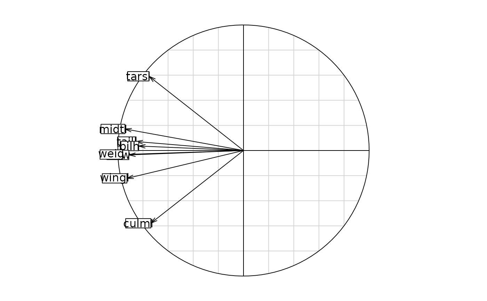
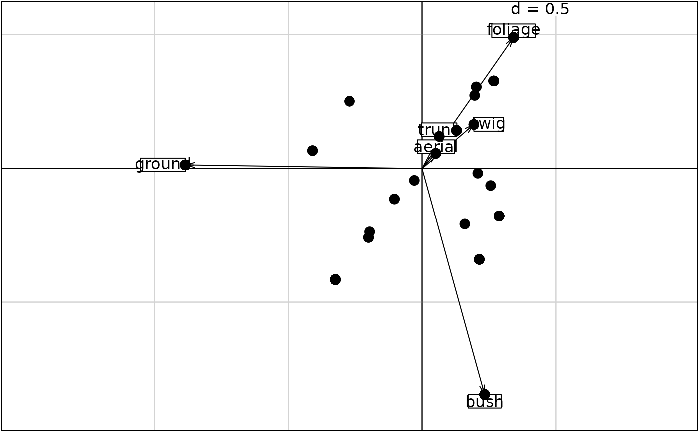
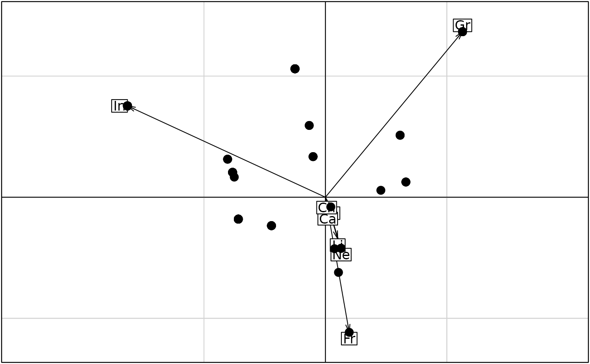

Ecomorphological Convergence
ecomor.RdThis data set gives ecomorphological informations about 129 bird species.
Usage
data(ecomor)Format
ecomor is a list of 7 components.
- forsub
is a data frame with 129 species, 6 variables (the feeding place classes): foliage, ground , twig , bush, trunk and aerial feeders. These dummy variables indicate the use (1) or no use (0) of a given feeding place by a species.
- diet
is a data frame with 129 species and 8 variables (diet types): Gr (granivorous: seeds), Fr (frugivorous: berries, acorns, drupes), Ne (frugivorous: nectar), Fo (folivorous: leaves), In (invertebrate feeder: insects, spiders, myriapods, isopods, snails, worms), Ca (carnivorous: flesh of small vertebrates), Li (limnivorous: invertebrates in fresh water), and Ch (carrion feeder). These dummy variables indicate the use (1) or no use (0) of a given diet type by a species.
- habitat
is a data frame with 129 species, 16 dummy variables (the habitats). These variables indicate the species presence (1) or the species absence (0) in a given habitat.
- morpho
is a data frame with 129 species abd 8 morphological variables: wingl (Wing length, mm), taill (Tail length, mm), culml (Culmen length, mm), bilh (Bill height, mm), bilw (Bill width, mm), tarsl (Tarsus length, mm), midtl (Middle toe length, mm) and weig (Weight, g).
- taxo
is a data frame with 129 species and 3 factors: Genus, Family and Order. It is a data frame of class
'taxo': the variables are factors giving nested classifications.- labels
is a data frame with vectors of the names of species (complete and in abbreviated form.
- categ
is a data frame with 129 species, 2 factors : 'forsub' summarizing the feeding place and 'diet' the diet type.
Source
Blondel, J., Vuilleumier, F., Marcus, L.F., and Terouanne, E. (1984). Is there ecomorphological convergence among mediterranean bird communities of Chile, California, and France. In Evolutionary Biology (eds M.K. Hecht, B. Wallace and R.J. MacIntyre), 141--213, 18. Plenum Press, New York.
References
See a data description at http://pbil.univ-lyon1.fr/R/pdf/pps023.pdf (in French).
Examples
data(ecomor)
ric <- apply(ecomor$habitat, 2, sum)
s.corcircle(dudi.pca(log(ecomor$morpho), scan = FALSE)$co)

forsub <- data.frame(t(apply(ecomor$forsub, 1, function (x) x / sum(x))))
pca1 <- dudi.pca(forsub, scan = FALSE, scale = FALSE)
w1 <- as.matrix(forsub) %*% as.matrix(pca1$c1)
if(adegraphicsLoaded()) {
g1 <- s.arrow(pca1$c1, plot = FALSE)
g2 <- s.label(w1, plab.cex = 0, ppoi.cex = 2, plot = FALSE)
G1 <- superpose(g1, g2, plot = TRUE)
} else {
s.arrow(pca1$c1)
s.label(w1, clab = 0, add.p = TRUE, cpoi = 2)
}

diet <- data.frame(t(apply(ecomor$diet, 1, function (x) x / sum(x))))
pca2 <- dudi.pca(diet, scan = FALSE, scale = FALSE)
w2 <- as.matrix(diet) %*% as.matrix(pca2$c1)
if(adegraphicsLoaded()) {
g3 <- s.arrow(pca2$c1, plot = FALSE)
g4 <- s.label(w2, plab.cex = 0, ppoi.cex = 2, plot = FALSE)
G2 <- superpose(g3, g4, plot = TRUE)
} else {
s.arrow(pca2$c1)
s.label(w2, clab = 0, add.p = TRUE, cpoi = 2)
}

if (FALSE) {
dmorpho <- dist.quant(log(ecomor$morpho), 3)
dhabitat <- dist.binary(ecomor$habitat, 1)
dtaxo <- dist.taxo(ecomor$taxo)
mantel.randtest(dmorpho, dhabitat)
RV.rtest(pcoscaled(dmorpho), pcoscaled(dhabitat), 999)
procuste.randtest(pcoscaled(dmorpho), pcoscaled(dhabitat))
ecophy <- taxo2phylog(ecomor$taxo, add.tools=TRUE)
table.phylog(ecomor$habitat, ecophy, clabel.n = 0.5, f = 0.6,
clabel.c = 0.75, clabel.r = 0.5, csi = 0.75, cleg = 0)
plot(ecophy, clabel.n = 0.75, clabel.l = 0.75,
labels.l = ecomor$labels[,"latin"])
mantel.randtest(dmorpho, dtaxo)
mantel.randtest(dhabitat, dtaxo)
}